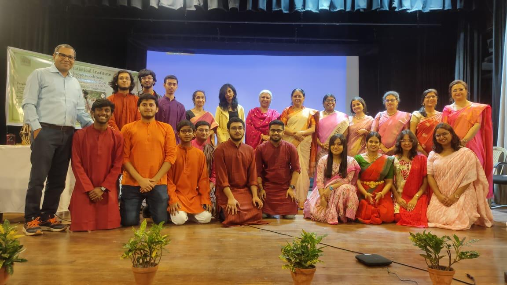
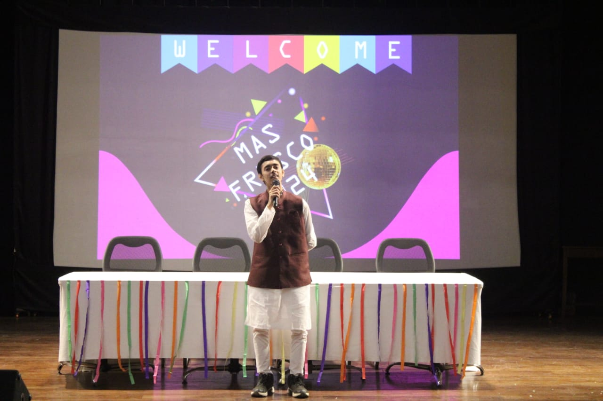

Years: B.Stat (Ongoing)
I first heard about ISI from my schoolteachers in Krishnagar. I was drawn to mathematics early on — not because I wanted to be ahead, but because it just made more sense than rote learning. It was logical, structured, and fair. My journey led me through the IOQM (then called Pre-RMO), and as I explored deeper, I came across names like CMI and ISI. ISI stood out — something about it felt like the right fit. Now that I'm here, I know I wasn’t wrong. ISI Kolkata sits quietly on the city's edge, away from the glamour of typical college life. No flashy fests, no overdone drama. What you’ll find instead is a quiet dedication — people engrossed in problems, proofs, and discussions that stretch well into the evening. It’s academically intense — no sugar-coating that — but I find comfort in its simplicity, in the support from peers and seniors, and in the unspoken understanding that everyone’s here because they truly like what they study. It’s a tough climb, but if passion counts for anything, I think I’m on the right path.

